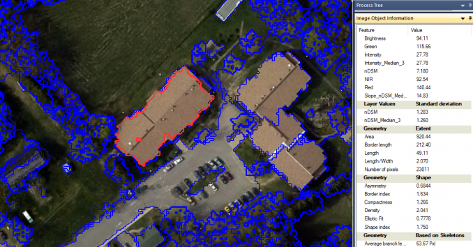
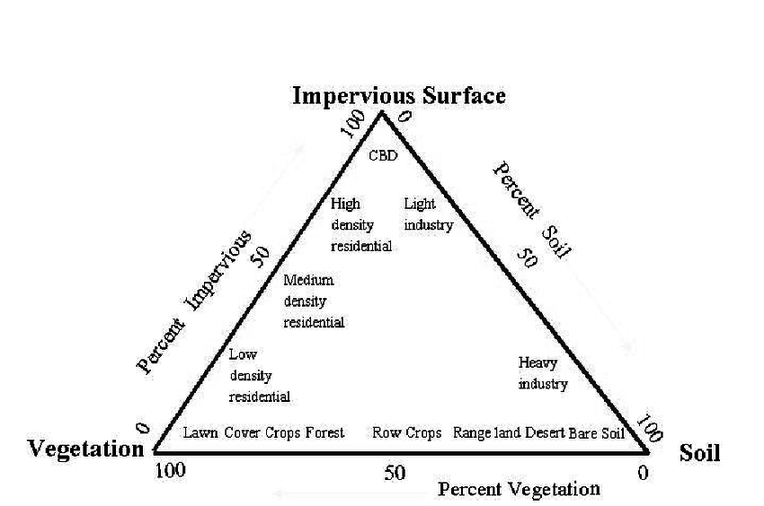
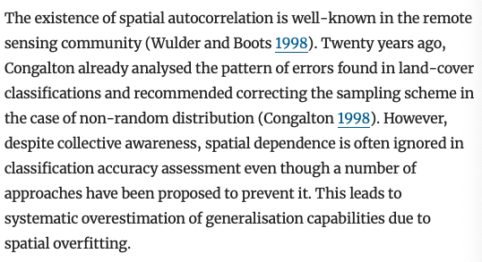

7 Classification (ii)
7.1 Summary
This week we were discussing how to classify data and considered object based image analysis (OBIA) and sub-pixel analysis, before moving on to discuss measures of accuracy. I will summarise these below - I promise it will be more brief than last week!
7.1.1 Object based image analysis (OBIA)

Essentially, this is when you analyse EO data by dividing the image into meaningful objects/segments rather than by processing individual pixels. This is conducted by considering shapes based on the similarity or difference between cells. Simple Linear Iterative Clustering (SLIC) is the most common method and works by laying a regular grid of points across an image and using this to calculate the distance from the point to the neighbouring pixel, making objects as it classifies across the image.
7.1.2 Sub-pixel analysis
In instances where a singular pixel may be composed of various different land cover types, sub-pixel analysis can be used to support classification efforts. This technique is used to estimate the fraction of each pixel that is covered by different materials/land cover types. I really liked mention of the VIS model during this part of the lecture as I’d never heard about it before - it’s a conceptual framework used to describe the land types in urban environments that is underpinned by a premise that urban areas can be characterised by three main components: vegetation, impervious surfaces (eg. concrete) and soil.

7.1.3 Accuracy
After discussing these, we were taught about how accuracy is measured in remote sensing and machine learning. At the end of the day, the things that are monitored are:
Producer accuracy: classification results meet creator expectations
User’s accuracy: pixels incorrectly classified as a known class when they should’ve been classified as something else
Overall accuracy
As if remembering all of those isn’t enough to juggle, you also need to consider true positive/negative and false positive/negative when assessing a model’s performance.
At this point, I was reassured to hear some discussion of things I have already become familiar with, like the benefits of cross validating classification models by splitting the dataset into training/testing sets. What was new to me however was the explanation of spatial cross-validation. This is a method used to evaluate the performance of spatial models, taking into account the spatial autocorrelation inherent in geographic data (hello, Tobler!). Unlike normal cross-validation, spatial cross-validation partitions the data into training and testing sets in a way that respects the spatial autocorrelation. This involves grouping together spatially close observations, ensuring that the training/testing sets are spatially separated. Ultimately, this ensures a more realistic assessment of the model’s performance when predicting outcomes for new and unseen locations.
7.2 Applications
Mentioned during the lecture for its arguably harsh title, I read Karasiak et al.,‘s 2021 paper ’Spatial dependence between training and test sets: another pitfall of classification accuracy assessment in remote sensing’. I found this paper really interesting and a perfect compliment to the week’s discussion of spatial autocorrelation’s effect on accuracy. The authors argue that all too often, spatial autocorrelation is not accounted for in image classification, leading to bias in accuracy metrics. They demonstrate this through experiments on Sentinel-2 data for forest classification that find the spatial leave-one-out cross-validation is the most accurate and least biased in it results.
I found their argument very compelling - I hadn’t considered the potential effects of spatial autocorrelation on classification tasks, despite having run some ML models in the past at work. Clearly I am not alone in that however, and was amused to read the following section which demonstrated exactly that.

From this I was inspired to return to papers I had come across before to see whether or not spatial autocorrelation was accounted for in classification models that perhaps would’ve benefitted from them. One that I was reminded of was Muchoney et al.,2002’s STEP model which impressively described site vegetation, environment and other biophysical parameters through its classification system. Whilst the paper is impressive in terms of the scope of mapping it permits as well as the ways in which it builds upon past similar studies, I realise now upon rereading it that it doesn’t acknowledge any potential effect of spatial dependence. Whether or not they did consider this I don’t know - what I do know however is that without mention of it in the methodology, I wonder what a difference it would’ve made on the model’s accuracy had they accounted for it. This is particularly relevant for this study as they seek to create a map of Central America which to me, sounds like it will indeed be affected by spatial autocorrelation.
I assumed that perhaps more recent papers seeking to employ similar methodologies might differ and instead more obviously mention this potential study pitfall. However after reading through Ganem et al.,’s 2022 review of papers employing classification models to map South America’s drylands, this does not appear to be the case. Broadly, discourse appears to be dominated by discussion of comparing models and specifically, comparing their overall accuracy (%). Whilst this is important, I was surprised to see that no attention was paid to spatial cross-validation, and equally as surprised to see that reasons behind highly accurate models were not being attended to. Although getting a highly accurate score is undoubtedly important, I think that more studies should look backwards on a high score and consider what the reasons for it might be so as to ensure models are not benefiting from the effects of processes like spatial autocorrelation impacting testing/training sets and potentially increasing the accuracy of models.
7.3 Reflections
If I’m being honest, I found this week’s content harder to work my way through than the weeks prior. Realistically, I think I probably saw the slides on accuracy and was slightly overwhelmed by the variety of different ways to measure accuracy, only to be thrown off further by the discussion of matrices which conceptually never come to me quite quick. That being said, I was excited by the spatial autocorrelation mention as this was something I really enjoyed learning about in CASA005 and in my Principles of Spatial Analysis course with Anwar Musah. I definitely know that next time I’m doing modelling with remote sensing I’ll bare it in mind, as I was dwelling on past projects I had done during my internships and realised never before had its potential effects been mentioned! I will also in future be thinking much more about my model accuracy scores and make sure that I trial different ways of boosting my study accuracy.
7.4 References
Ganem, K.A., Xue, Y., Rodrigues, A.A., Franca-Rocha, W., Oliviera, M.T., Carvalho, N.S., Cayo, E., Rosa, M., Dutra, A., Shimabukuro, Y.E. (2022) ‘Mapping South America’s drylands through remote sensing - A review of the methodological trends and current challenges’. Remote Sensing, vol. 14, is. 3.
GIS Geography (2023) ‘OBIA - Object-Based Image Analysis (GEOBIA)’. Web page, available at: https://gisgeography.com/obia-object-based-image-analysis-geobia/
Karasiak, N., Dejoux, J.F., Monteil, C., Sheeren, D. (2021) ‘Spatial dependence between training and test sets: another pitfall of classification accuracy assessment in remote sensing’. Machine Learning, vol. 111, pp. 2715-2740.
Muchoney, D., Borak, J., Chi, H., Friedl, M., Gopal, S., Hodges, J., Morrow, N., Strahler, A. (2000) ‘Application of the MODIS global supervised classification model to vegetation and land cover mapping of Central America’. Int. Journal of Remote Sensing, vol. 21, no. 6 & 7, pp. 1115-1138
Plaza, A., Martinez, P., Perez, R., Plaza, J. (2002) ‘Spatial/spectral endmember extraction by multidimensional morphological operations’. IEEE Transactions on Geoscience and Remote Sensing, vol. 40, no. 9, pp. 2025-2041